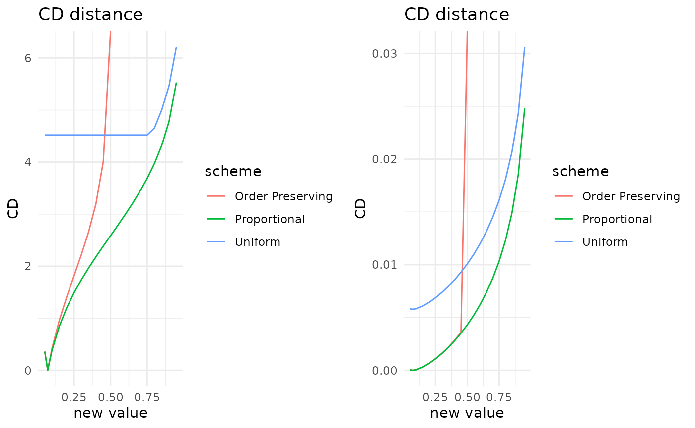

The functionalities of bnmonitor for sensitivity analysis in Discrete Bayesian Networks are illustrated using the fire_alarm network bundled within the package representing a simple alarm system for fire accidents.
library(bnlearn)
library(bnmonitor)
graphviz.plot(fire_alarm)The network consists of 6 nodes (Fire, Smoke, Tampering, Alarm, Leaving and Report) of either two or three levels.
Covariation schemes
The aim of a sensitivity analysis is to assess how parameter changes affect output probabilities of interest. When one parameter changes than others need to be adjusted and this can be done in many ways, including proportional, uniform and order-preserving schemes. Suppose we vary the probability that Alarm = FALSE given that Fire = TRUE and Tampering = FALSE from 0.01 to 0.1. The resulting probabilities from the proportional covariation scheme can be computed as follows.
proportional_covar(bnfit = fire_alarm, node = "Alarm", value_node = "FALSE", value_parents = c("TRUE","FALSE"), new_value = 0.1)$Alarm$prob
#> , , Tampering = TRUE
#>
#> Fire
#> Alarm TRUE FALSE
#> TRUE 0.60000000 0.65000000
#> MALFUNCTION 0.20000000 0.20000000
#> FALSE 0.20000000 0.15000000
#>
#> , , Tampering = FALSE
#>
#> Fire
#> Alarm TRUE FALSE
#> TRUE 0.83636364 0.00010000
#> MALFUNCTION 0.06363636 0.65000000
#> FALSE 0.10000000 0.34990000The functions uniform_covar and orderp_covar have the same inputs and return the BN where probabilities are updated using uniform and order-preserving covariation, respectively.
Sensitivity functions
Suppose we are interested in the probability that Report = TRUE and how this varies with respect to the probability that Alarm = FALSE conditional on Fire = TRUE and Tampering = FALSE. This can be computed with the function sensitivity.
library(ggplot2)
sens <- sensitivity(bnfit = fire_alarm, interest_node = "Report", interest_node_value = "TRUE" , node = "Alarm" , value_node = "FALSE", value_parents = c("TRUE","FALSE"), new_value = "all", covariation = "all")
#>
#> Attaching package: 'gRbase'
#> The following objects are masked from 'package:bnlearn':
#>
#> ancestors, children, nodes, parents
plot(sens) + theme(legend.title = element_text(size = 5), legend.text = element_text(size = 4), legend.position = "bottom")
For all covariation schemes as the conditional probability of Alarm = FALSE increases, the probability of Report = TRUE decreases. The uniform covariation scheme is reported in red, the proportional in green and the order-preserving in blue.
The function sensitivity also allows for conditional probabilities of interest, not only marginals, which can be set by the options evidence_nodes and evidence_states.
For such changes in the probability distribution of a BN, we can compute the distance between the original and the varied networks using the Chan-Darwiche distance (CD) and the Kullback-Leibler divergence (KL). As an example consider Alarm = MALFUNCTIOn conditional on Fire = TRUE and Tampering = FALSE.
cd_distance <- CD(fire_alarm, node = "Alarm", value_node = "MALFUNCTION", value_parents = c("TRUE","FALSE"), new_value = "all", covariation = "all")
kl_divergence <- KL(fire_alarm, node = "Alarm", value_node = "MALFUNCTION", value_parents = c("TRUE","FALSE"), new_value = "all", covariation = "all")
plot(cd_distance) + theme(legend.title = element_text(size = 5), legend.text = element_text(size = 4), legend.position = "bottom")
plot(kl_divergence) + theme(legend.title = element_text(size = 5), legend.text = element_text(size = 4), legend.position = "bottom")
As expected proportional covariation has the smallest distance/divergence of all covariation schemes.
Sensitivity queries
Another task in sensitivity analysis is to identify parameter changes that meet a specific constraint. As an example suppose we want the probability Report = TRUE to be equal to 0.4. Which parameters could we change to obtain such a probability? The answer can be obtained using the function sensquery.
sensquery(bnfit = fire_alarm, interest_node = "Report", interest_node_value = "TRUE", new_value = 0.4)
#> Node Value node Value parents Original value Suggested change
#> 1 Leaving TRUE MALFUNCTION 0.7300 0.7983961
#> 2 Report TRUE TRUE 0.7500 0.8164951
#> 3 Tampering TRUE 0.0200 0.2018769
#> 4 Fire TRUE 0.0100 0.1252059
#> 5 Alarm TRUE FALSE,FALSE 0.0001 0.1106591
#> CD distance
#> 1 0.3816771
#> 2 0.3941673
#> 3 2.5172158
#> 4 2.6510913
#> 5 7.1262142There are five parameter changes that would lead to a probability of Report = TRUE of 0.4. These are ordered by the value of the CD distance between the original and the new network, from smallest to largest.